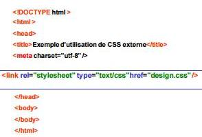
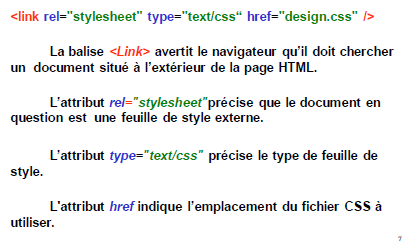
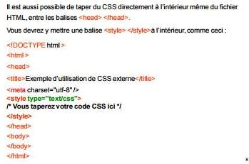
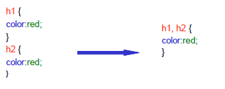

- Principe des CSS
- Format CSS
- Appel d’un fichier .css
- Directement dans le header du fichier HTML
- Appliquer un style à des balises
- Exemple CSS
- Des commentaires dans CSS
- Utiliser les classes
- L'attribut id
- Les balises universelles
- Exemple
- Imbrications de balises
- Taille du texte
- Polices
- Exemple
- Alignement simple
- L'indentation: la mise en retrait du texte
- Effets de style
- Les majuscules en CSS
- La décoration
- Les couleurs
- La notation hexadécimale
- La méthode RGB (Red-Green-Blue)
- Le fond
- La couleur de fond
- Exemple
- L'image de fond
- Effets sur les liens
- Les pseudo-formats
- Au passage de la souris
- Au moment du clic
- Première lettre et première ligne
- Retrait des listes
- Exemple
- Représentation de la puce
- Pour les listes non ordonnées (ul)
- Pour les listes ordonnées (ol)
- Changer l’image de la puce
- Dimensionnement et positionnement
- Mise en page
- Tableaux
- Formulaires
• Le design d'un site évolue toujours au fil du temps.
• Le problème, lorsqu'on n'utilise pas de feuilles de style, c'est qu'il faut reprendre toutes les pages une à une pour modifier une police de caractère ou une couleur de fond.
• Avec les "Cascading Style Sheets" (CSS), ce lourd handicap est résolu.
• C'est dans la feuille de style que l'on va déclarer toute la mise en forme des pages : la couleur de fond, les polices de caractère, leurs couleurs, etc.Celle-ci sera liée à chaque page html.
• Ainsi, lorsqu'on en modifiera un élément, cela se répercutera immédiatement sur
• On écrit le code CSS dans un fichier à part (à l’extension .css au lieu de .html).
• C’est un fichier dans lequel on écrit l’apparence que notre site doit avoir :la couleur et la police du texte, la taille des titres, la position des menus, la couleur ou l’image de fond etc…
 
- Directement dans le header du fichier HTML

Appliquer un style à des balises
Dans un CSS, on trouve 3 éléments différents :
Des noms de balises: On écrit les noms des balises dont on veut modifier l’apparence.
Par exemple, si je veux modifier l’apparence de tous les titres (h1),je dois écrire h1.
Des propriétés CSS : Les "effets de style" de la page sont rangés dans des propriétés.
Il y a par exemple la propriétécolor qui permet d'indiquer la couleur du texte, font-size qui permet d'indiquer la taille du texte etc...
Les valeurs :à chaque propriété CSS on doit indiquer une valeur.
Par exemple, pour la couleur, il faut indiquer le nom de la couleur. Pour la taille, il faut indiquer quelle taille on veut etc etc...
